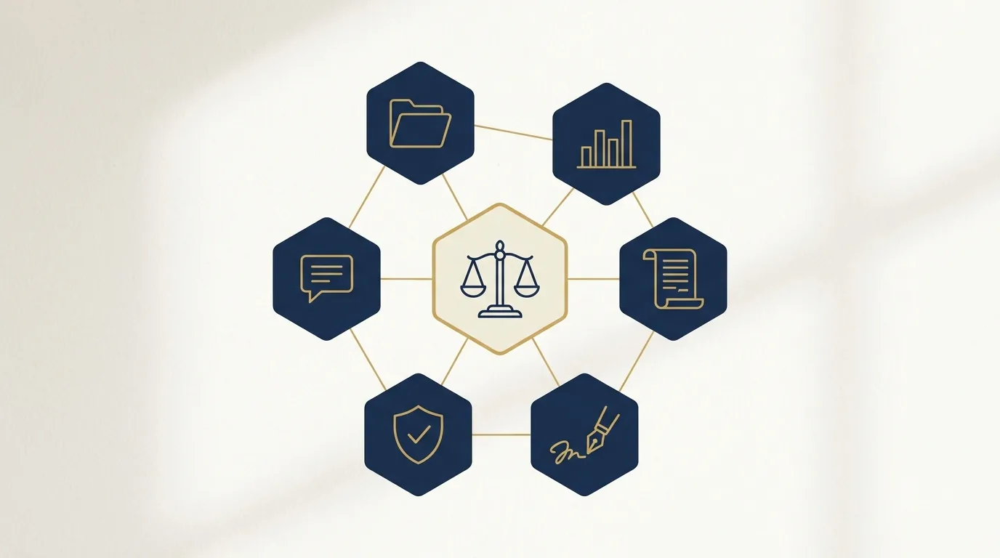

Legaltech e Lawtech: O Que São, Diferenças e Como Usar
Você já usa tecnologia jurídica todos os dias, mesmo sem chamá-la pelo nome. O peticionamento eletrônico, o software que avisa o prazo, a pesquisa de jurisprudência que responde em segundos: tudo isso faz parte do universo que o mercado batizou de legaltech e lawtech.
Os dois termos viraram presença constante em eventos, artigos e propostas comerciais. E junto deles veio a confusão: afinal, legaltech e lawtech são a mesma coisa? Existe diferença? Importa saber?
Importa, e por uma razão prática: entender o mapa desse ecossistema ajuda o escritório a comprar melhor. Quem conhece as categorias de solução identifica a própria dor com mais precisão e conversa de igual para igual com fornecedores.
Neste guia, você vai entender o que cada termo significa, a diferença entre eles e como o ecossistema brasileiro se organiza. Vai ver também quais categorias de solução existem, como escolher a certa para o seu momento e o que muda na rotina quando a tecnologia entra de verdade.
Um aviso de escopo: este não é um catálogo de ferramentas. Para a lista prática de aplicativos com inteligência artificial, já publicamos o guia de ferramentas de IA para advogados. Aqui o assunto é o ecossistema: que tipo de solução faz o quê e como decidir.
Legaltech e lawtech: o que significa cada termo
Comecemos pelo que os termos têm em comum. Ambos designam empresas, geralmente startups (negócios jovens de base tecnológica, criados para crescer rápido), que usam tecnologia para resolver problemas do mundo jurídico. A matéria-prima é a mesma: software, dados e automação aplicados ao Direito.
No uso cotidiano brasileiro, muita gente trata legaltech e lawtech como sinônimos, e a comunicação raramente sofre com isso. Mas existe uma distinção conceitual que parte do mercado adota e que vale conhecer, porque revela para quem cada solução foi desenhada.
A diferença na prática
A chave está no público que cada grupo atende.
Lawtech é a tecnologia voltada à prática da advocacia: soluções para advogados, escritórios e departamentos jurídicos trabalharem melhor. Software de gestão processual, automação de petições, jurimetria (a estatística aplicada a decisões judiciais) para definir estratégia, controle de prazos e produtividade.
Legaltech é o termo mais amplo: tecnologia aplicada ao Direito e aos serviços jurídicos como um todo, alcançando também quem não é advogado. Plataformas de assinatura eletrônica, resolução online de conflitos entre consumidores e empresas, soluções de compliance (a adequação a leis e normas) e privacidade, serviços que aproximam o cidadão da Justiça.
Uma imagem ajuda a fixar: toda lawtech é uma legaltech, mas nem toda legaltech é uma lawtech. A lawtech fala com o profissional do Direito; a legaltech fala com o mercado jurídico inteiro, do escritório ao consumidor final.
Daqui em diante, quando o texto disser legaltech sem especificar, estará usando o termo guarda-chuva, amparado nessa lógica de conjunto. Quando a distinção importar, ela aparece nomeada.
💡 DICA VALIOSA: Na próxima proposta comercial que chegar, identifique o público-alvo da solução antes do preço. Ferramenta desenhada para departamento jurídico de banco raramente serve bem a um escritório de dez advogados, por melhor que seja a demonstração. A pergunta "isso foi feito para quem?" filtra metade das compras erradas.
O ecossistema brasileiro de legaltech e lawtech
O Brasil reúne condições raras para esse mercado: um dos maiores volumes de processos do mundo, Judiciário majoritariamente eletrônico e mais de um milhão de advogados. Onde há gargalo e dado em abundância, nasce startup.
O resultado é um ecossistema com centenas de empresas ativas, articulado por entidades como a AB2L, a Associação Brasileira de Lawtechs e Legaltechs, que organiza o setor, publica estudos e mantém o radar das soluções em operação no país.
O próprio Judiciário faz parte do movimento. Processo eletrônico, audiências por videoconferência, balcão virtual e núcleos de justiça digital mostram que a transformação não é escolha de escritório moderninho: é o ambiente em que toda a advocacia já opera. Quem entende o ecossistema conversa melhor até com o tribunal.
Três forças seguem empurrando o crescimento. O processo eletrônico gerou uma massa de dados públicos que alimenta jurimetria e pesquisa inteligente. A pressão por eficiência obriga escritórios a fazer mais com menos. E a inteligência artificial generativa, a que produz textos novos, como minutas e resumos, abriu uma frente inédita, da redação assistida à análise de contratos em escala.
Para o escritório, isso significa oferta abundante e amadurecida em quase toda dor operacional. A pergunta deixou de ser "existe solução?" e passou a ser "qual delas serve ao meu tamanho e à minha área?".
O que isso muda para o escritório pequeno e médio
A maturidade do ecossistema teve um efeito democratizante. Dez anos atrás, tecnologia jurídica séria era projeto caro, de implantação lenta, restrito às grandes bancas. Hoje a maioria das soluções opera na nuvem, cobra assinatura mensal proporcional ao uso e se contrata em minutos.
Na prática, o escritório de dois advogados acessa a mesma prateleira tecnológica da banca de duzentos. A diferença competitiva migrou do acesso para o critério: ganha quem escolhe bem e implanta direito, não quem gasta mais.
O mesmo raciocínio vale para a visibilidade, aliás. As ferramentas que nivelaram a operação têm um paralelo no marketing digital, que nivelou a disputa por clientes. Se o seu escritório ainda não aproveita essa segunda frente, o time da JuriDigital mostra numa conversa o que dá para construir com o seu orçamento atual.
As categorias de solução que importam para o escritório

Mais útil que decorar nomes de empresas é dominar as categorias de legaltech e lawtech. Elas se mantêm estáveis mesmo com startups nascendo e morrendo todo ano.
| Categoria | O que resolve | Exemplo de uso no dia a dia | Lawtech ou legaltech ampla? |
|---|---|---|---|
| Gestão jurídica | Processos, prazos, tarefas e financeiro num só lugar | Alerta automático de prazo com dupla conferência | Lawtech |
| Jurimetria e análise de dados | Estatística aplicada a decisões judiciais | Avaliar chance real de êxito antes de aceitar a causa | Lawtech |
| Automação de documentos | Petições e contratos gerados a partir de modelos | Contrato padrão pronto em minutos, sem retrabalho | Lawtech |
| Pesquisa jurídica com IA | Busca inteligente de jurisprudência e doutrina | Encontrar precedente favorável em segundos | Lawtech |
| Assinatura e formalização | Assinatura eletrônica e gestão de contratos | Fechar contrato de honorários no mesmo dia | Legaltech ampla |
| ODR (resolução online de conflitos) | Negociação e acordo por plataforma digital | Resolver disputa de consumo sem audiência | Legaltech ampla |
| Compliance e LGPD | Adequação à proteção de dados e governança | Mapear dados pessoais tratados pelo escritório | Legaltech ampla |
Repare que a inteligência artificial não é uma categoria à parte: ela atravessa todas. A jurimetria usa IA para prever, a pesquisa usa IA para encontrar, a automação usa IA para redigir. Tratamos das ferramentas em si no guia dedicado; aqui, o ponto é saber em qual prateleira procurar.
Por onde os escritórios costumam começar
Existe uma ordem natural de adoção. Primeiro a gestão jurídica, porque prazo perdido é o risco que nenhum escritório aceita. Depois a automação de documentos, que devolve horas semanais imediatas. Na sequência, pesquisa com IA e jurimetria, que elevam a qualidade da estratégia. ODR e compliance entram conforme a área de atuação pede.
Escritório que tenta começar pelo sofisticado sem arrumar o básico inverte a pirâmide: jurimetria de ponta não compensa intimação perdida por falta de um bom controle de prazos.
Quando chega a vez da jurimetria, porém, o efeito é visível até na mesa de negociação. Saber que determinada câmara reforma poucas sentenças daquele tipo, ou que o valor médio de condenação na matéria fica numa certa faixa, transforma o acordo de chute em cálculo. O cliente percebe a diferença entre o advogado que acha e o que demonstra.
Como escolher a solução certa (sem se perder na demonstração)
Toda demonstração de legaltech é encantadora; a rotina três meses depois é que conta a verdade. Cinco perguntas protegem a decisão.
| Pergunta antes de contratar | Por que importa |
|---|---|
| Que dor concreta isso resolve, medida em horas ou risco? | Compra sem dor definida vira licença esquecida |
| Integra com o que o escritório já usa? | Ferramenta isolada cria retrabalho em vez de eliminar |
| Quem treina a equipe e acompanha a implantação? | Adoção fracassa mais por gente do que por software |
| Como tratam os dados do escritório e dos clientes (LGPD)? | Dado de processo é material sensível; sigilo não se terceiriza |
| Qual o custo total contra o valor da hora liberada? | A conta certa compara mensalidade com horas devolvidas |
O critério final é sempre o mesmo: a tecnologia precisa liberar tempo do advogado para o trabalho que só advogado faz. Se a ferramenta exige mais operação do que entrega, ela virou um cliente a mais, e dos que não pagam.
Vale aproveitar também os períodos de teste. Quase toda lawtech oferece avaliação gratuita; use esses dias com um caso real e a equipe inteira, não com dados de exemplo numa tarde vazia. O teste que simula a rotina de verdade revela em duas semanas o que a demonstração comercial esconderia por meses.
E envolva no teste quem vai operar a ferramenta todos os dias. A secretária que alimenta o sistema e o advogado que consulta os prazos enxergam defeitos que o sócio, na demonstração, não vê. Implantação imposta de cima costuma morrer em silêncio: a equipe volta para a planilha antiga e a licença segue sendo paga sem uso.
⚠️ ATENÇÃO: Cuidado com a compra por medo de ficar para trás. O discurso de que "quem não adotar tudo agora vai desaparecer" vende licença, não resultado. Escritório sólido não corre atrás de moda; resolve dor concreta com calma e critério, no seu ritmo.
O que muda na rotina quando a tecnologia entra de verdade
A transformação aparece em três camadas, nesta ordem.
A primeira é o tempo. Triagem de publicações, cálculo de prazo, montagem de documento repetitivo: o operacional que consumia as tardes passa a rodar em minutos. É a camada mais visível e a mais rápida de sentir.
Um exemplo do antes e depois. Sem automação, um contrato de prestação de serviços padrão consome uma hora entre localizar o modelo, adaptar cláusulas e conferir dados. Com automação de documentos, o advogado responde a um questionário de cinco minutos e revisa o resultado pronto. A mesma semana, os mesmos contratos, e uma tarde inteira devolvida à agenda.
A segunda é a qualidade da decisão. Com jurimetria e dados, o escritório aceita causas com critério, precifica com base em risco real e desenha estratégias apoiadas em estatística, não apenas em intuição. A conversa com o cliente muda de tom: "a jurisprudência da câmara indica isso" convence mais que "acho que temos boas chances".
A terceira é a competitividade. Escritório tecnológico atende mais rápido, erra menos e custa menos por caso. Essa vantagem aparece na ponta: honorários mais competitivos com margem preservada, ou margem maior no mesmo preço. Já mostramos esse movimento no guia sobre transformação digital na advocacia.
Há ainda um efeito silencioso na experiência do cliente. Portal para acompanhar o próprio caso, contrato assinado no celular, resposta rápida porque a equipe não está afogada em tarefa manual: o cliente moderno compara o escritório com os melhores serviços digitais que usa, do banco ao aplicativo de entrega. Atender nesse padrão deixou de ser diferencial de banca grande e virou expectativa básica.
O escritório que ignora esse movimento não fica parado; fica para trás em silêncio, perdendo cliente sem saber o motivo. O que ignora a própria visibilidade sofre o mesmo efeito, na vitrine em vez da operação.
E há um efeito que pouca gente percebe: eficiência interna financia crescimento externo. As horas que a legaltech devolve são exatamente as horas que faltavam para o escritório cuidar da própria visibilidade, produzir conteúdo e captar melhor. Tecnologia sem estratégia de crescimento vira só custo menor; com estratégia, vira máquina de expansão. A JuriDigital cuida dessa segunda metade: enquanto a tecnologia otimiza a sua operação, nós fazemos o marketing trazer os casos novos. Converse com o nosso time.
Perguntas frequentes sobre legaltech e lawtech
Qual a diferença entre lawtech e legaltech?
Lawtech é a tecnologia voltada à prática da advocacia: soluções para advogados, escritórios e departamentos jurídicos. Legaltech é o termo mais amplo, cobrindo tecnologia aplicada ao Direito como um todo, incluindo serviços para empresas e consumidores. No uso cotidiano brasileiro, os termos aparecem muitas vezes como sinônimos.
Legaltech substitui o advogado?
Não. As soluções automatizam tarefas repetitivas e apoiam decisões com dados, mas os atos privativos da advocacia continuam com o profissional. Na prática, a tecnologia muda o perfil do trabalho: menos tempo em tarefa mecânica, mais tempo em estratégia e relacionamento com o cliente.
Quais são as principais categorias de legaltech e lawtech?
Gestão jurídica, jurimetria e analytics, automação de documentos, pesquisa jurídica com inteligência artificial, assinatura eletrônica e gestão de contratos, resolução online de conflitos (ODR) e compliance com LGPD. A IA atravessa praticamente todas as categorias.
Escritório pequeno consegue usar legaltech?
Consegue, e é quem mais sente o impacto proporcional. A maioria das soluções opera por assinatura mensal acessível, sem instalação complexa. Um escritório de dois advogados com boa gestão jurídica e automação de documentos opera com a retaguarda que antes exigia equipe de apoio.
O que é ODR?
ODR significa Online Dispute Resolution, resolução online de disputas. São plataformas em que as partes negociam e fecham acordos digitalmente, sem audiência presencial, comuns em conflitos de consumo e cobranças de volume. Para escritórios, representam tanto um canal de atuação quanto uma via para resolver casos com rapidez.
Como começar a usar tecnologia jurídica no escritório?
Identifique a maior dor operacional, quase sempre o controle de prazos e processos, e resolva-a com uma solução de gestão jurídica. Implante, treine a equipe e meça o ganho. Depois avance uma categoria por vez: automação de documentos, pesquisa com IA, jurimetria. Adoção gradual consolida hábito e evita desperdício.
Legaltech e lawtech: o mapa está na mesa
Recapitulando: lawtech é o recorte voltado à prática da advocacia, e legaltech é o guarda-chuva que alcança o mercado jurídico inteiro. O ecossistema brasileiro está maduro, organizado em categorias claras, com solução testada para praticamente toda dor operacional do escritório.
A escolha certa segue o método deste guia: uma dor por vez, público-alvo confirmado, integração garantida, LGPD respeitada e a conta fechada em horas liberadas.
Se quiser um primeiro passo concreto para esta semana, ele cabe numa reunião de equipe: listem as três tarefas que mais consomem tempo no escritório, identifiquem em qual categoria da tabela deste guia cada uma se encaixa e agendem o teste gratuito de uma única solução. Trinta dias depois, a decisão se toma com dados da própria rotina, não com promessa de vendedor.
Resta decidir o que fazer com as horas que a tecnologia devolve. Os escritórios que crescem investem essa sobra em visibilidade e captação, e é aí que a JuriDigital entra: marketing jurídico completo para transformar eficiência em expansão. Fale com a nossa equipe e feche o ciclo que a tecnologia começou.